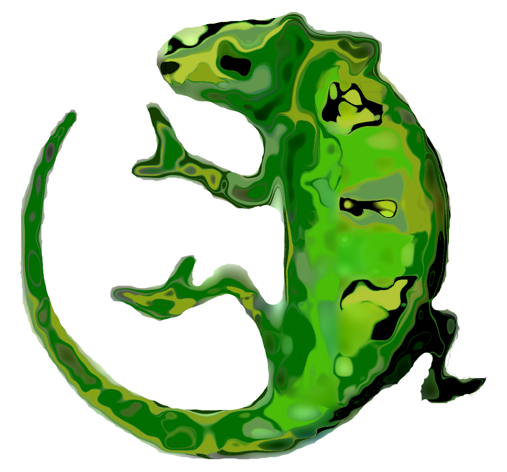

About Us >> History
History of TCKid, Identity of Staffing and Ownership:
In January 2011, Brice Royer officially transferred the ownership of TCKid to Myra Dumapias. The management was transferred to Myra as its new executive director and a team of advisory board members Tina Quick, Josh Sandoz, Yuyu Din, Paul Trigg and Chi-Yun Luo. The advisory board members served officially between October 1, 2010 to September 30, 2012, serving as the board that helped formulate a new mission statement, as an overseer of cash flow when there were any fiscal activities, and provided other support for organizational development After this transfer on January 2011, aside from the joint venture that involved some operational support from TCK Academy for TCKid through December 2011 in exchange for TCKid handling some TCK Academy emails as its resources allowed, Brice Royer's involvement with TCKid remained strictly as its founder. To our understanding, Brice Royer, after the transfer of ownership continued to operate TCK Academy, TCK Research and TCK World, which are separate entities from TCKid.
Since the transfer in January 2011, Myra Dumapias, as new owner of TCKid, began developing TCKid as a structured organization on a part time volunteer basis. In December 2011, Myra Dumapias registered TCKid as a nonprofit corporation with the state of Texas. With donations from the community in 2013 to cover the hundreds of dollars in fees for registration as a 501c3 public charity, Myra Dumapias submitted the paperwork for TCKid to receive this status to the United States Internal Revenue Service in August of 2013. TCKid was granted 501c3 status on November 8 of 2013.
TCKid's staff include Myra Dumapias, as Chief Executive Officer and Erin Sinogba, Executive Assistant. TCKid's board members at this time include Shannon Irby, Richard Klopp, Erin Sinogba and Myra Dumapias. The above named individuals are the only persons who are authorized to conduct TCKid business in the forms of: managing TCKid affairs, requesting information to become members of TCKid, sending communications to TCKid members and otherwise representing TCKid, unless specific projects or campaigns identify other staff or volunteers to conduct TCKid business. Operational management staff Myra and Erin are the only authorized staff to solicit donations through TCKid's one and only PayPal account. TCKid Local Group leaders who communicate through TCKid's Facebook group pages represent TCKid for events and as an organization to engage with TCKid members for socializing and educational purposes. TCKid Local Group Leaders and other (volunteer) staff are specifically identified on TCKid's group pages on Facebook and will eventually be identified on TCKid's website.
Official Name, Logo and Domain (for its website and email address):
Official Name - TCKid: A Home for Third Culture Kids (copyrighted)

Official Logo
(copyrighted)
Official Domain - tckid.com
If you have any questions about the above matters, please contact report@tckid.com.